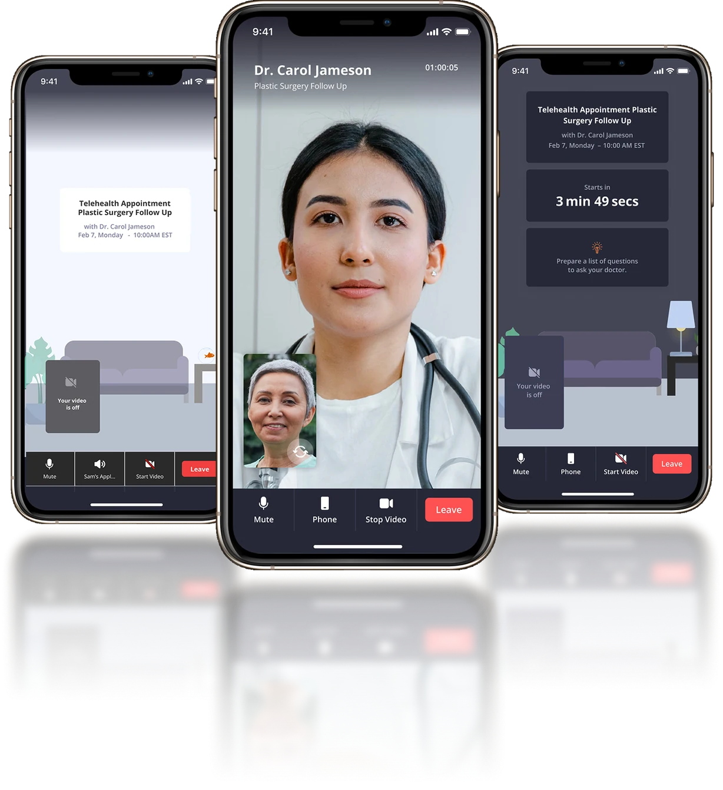

Selected Work
CTCA Telehealth
The Problem
The telehealth platform itself wasn’t actually the problem — the communication around it was. A deep dive into every patient touchpoint showed a flood of near-identical emails and texts: similar messaging and subject lines for confirming an appointment, reminding about it, and joining it. On top of that, proactive “tech calls” meant to get patients set up before their visit added yet another touchpoint. What was designed to help became a source of confusion. And even when setup went smoothly, patients often joined from a car or another low-connectivity spot, so the call dropped anyway.
My Role & Impact
Audited the current-state workflow end to end and ran patient interviews to find where the experience actually broke down. Aligned stakeholders across clinical and engineering, then partnered directly with engineering through redesign and rollout.
Metrics & Outcomes
10% reduction in dropped telehealth appointments.
Navigating Roadblocks
Getting teams to actually change established process was the real challenge. What consistently moved things forward was putting direct patient feedback and interview findings in front of them — people are set in their ways, so managing those relationships well was the key to getting alignment.
